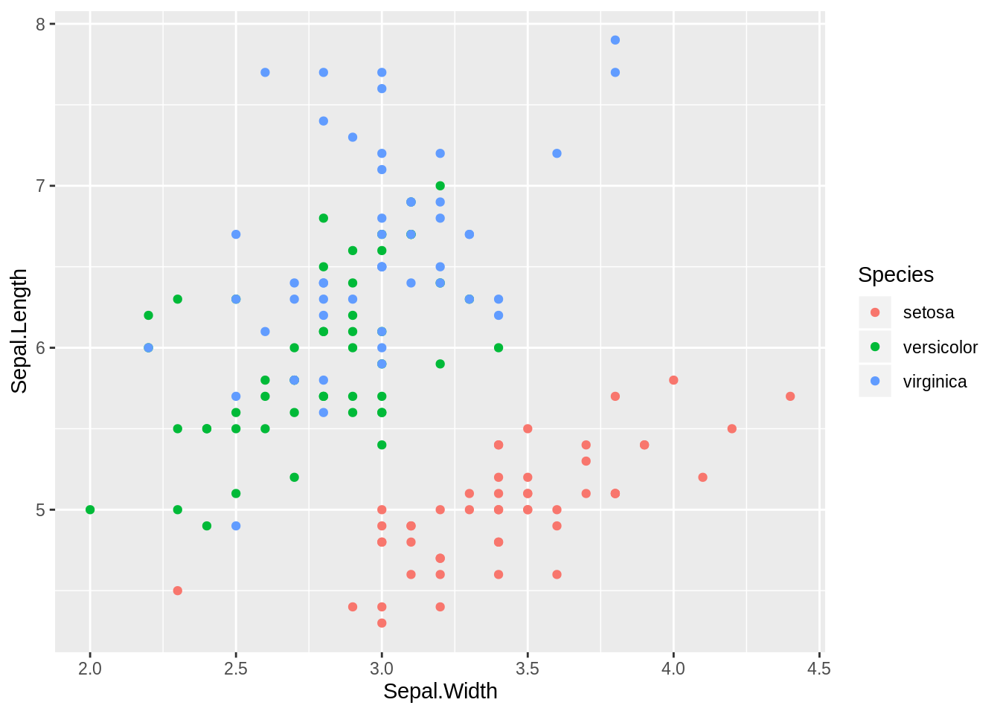
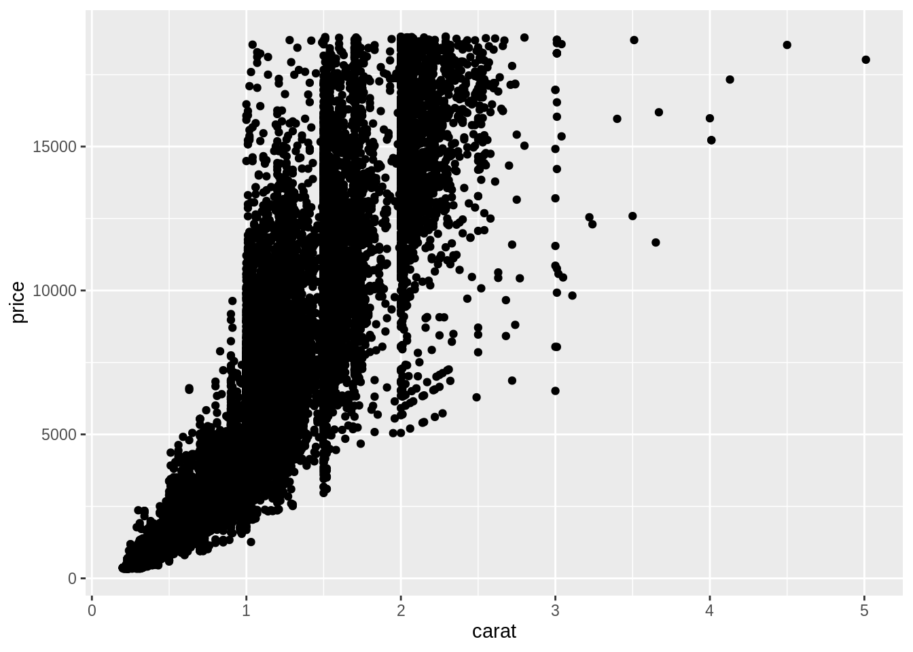
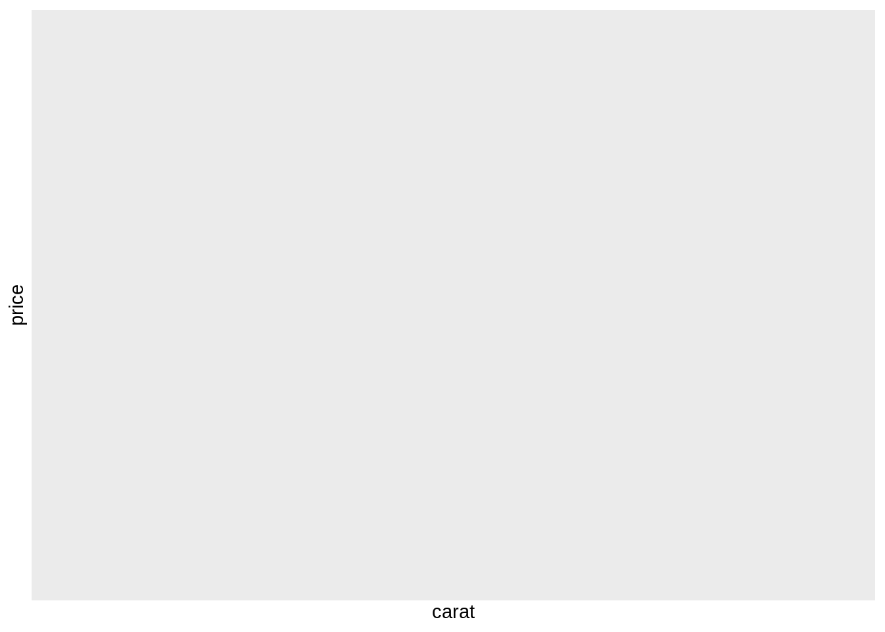
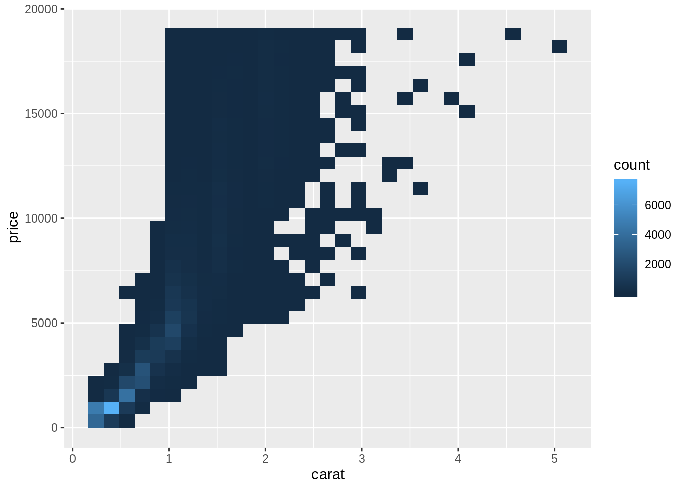
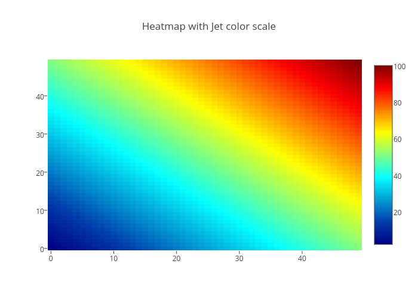
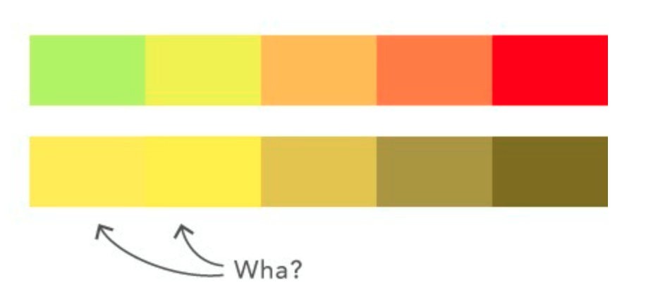
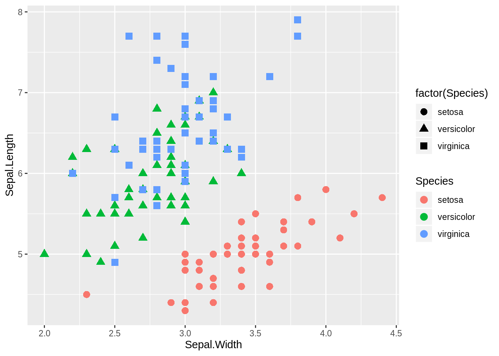

Learning Objectives
- Making better plots for outreach and communication.
- How to save your plots.
- How to bin and summarise in 2d using hexagons and squares.
- How to make your graphs accessible.
- Review Git and Github workflow
Lesson outline
- How to visualize data (review) (5 min)
- Saving your graphs (5 min)
- Review of plot choice (5 min)
- 2D histograms, square and hexagonal bins (10 min)
- Interactive and quick graphing (10 min)
- Graphing and accessability (5 min)
- Review Git and Github workflow (20 min)
Setup
- Load
ggplot2(library("ggplot2")).
Reduces the proportion of graphic’s ink devoted to the non-redundant display of data-information,
Avoid “chartjunk” - extraneous visual elements that detract from message.
When using ggsave, R by default saves the last graph you plotted. You can also use the GUI to export and save as an image or PDF.
One quirk about RStudio is that if you don’t specify the size of the graph, ggsave will save the graph as the same size as it appears in your plots window. This may or may not be what you want.
Try saving this graph:

Last week we talked about how summary plots (especially bar plots) can sometimes be misleading, and it is often most appropriate/ideal to show every individual observation with a dot plot or the like, perhaps combined with summary markers where appropriate. But, as we discussed last week, what if you have a gigantic data set with a zillion observations? In large data sets, it is often the case that plotting each individual observation would oversaturate the chart.
Let’s actually take a look at an oversaturated chart using one of the native datasets, diamonds:

Because this is a dataset with 53940 observations and we are plotting it on two dimensions, the resulting graph is incredibly oversaturated. Oversaturated graphs make it far more difficult to glean information from the visualization. We’re going to get into a few last methods of dealing with this problem.
First, let’s try making a 2D hexagonal heatmap (really a fancy histogram) with our huge diamonds dataset.
(It might seem like we’re skipping ahead in terms of graph complexity. To learn how to make a super simple histogram with simple count data, see here)
## Warning: Computation failed in `stat_binhex()`:
## Package `hexbin` required for `stat_binhex`.
## Please install and try again.
What has this changed? Now we have a handy legend to the right of our graph indicating the density of points across 2D space in our large dataset. We’ve created our first heat map.
Wikipedia’s definition of a heat map:
We’ve now added additional information to our graph and solved the saturation problem we encountered in our first graph. If you want to change the bin size (i.e. the size of the hexagons), you can do so as such:
## Warning: Computation failed in `stat_binhex()`:
## Package `hexbin` required for `stat_binhex`.
## Please install and try again.Here are more resources on hexagonal 2D heatmaps.
If we want our heat map to be square, rather than hexagonal, we can use the following geom:

Documentation for square/rectangular heat maps of 2D bin counts
Colour blindness is common in the population, and red-green colour blindness in particular affects 8% of men and 0.5% of women. Guidelines for making your visualizations more accessible to people affected by colour blindness, will in many cases also improve the interpretability of your graphs for people who have standard color vision. Here are a couple of examples:
Don’t use jet rainbow-coloured heatmaps. Jet colourmaps are often the default heatmap used in many visualization packages (you’ve probably seen them before).

Colour blind viewers are going to have a difficult time distinguishing the meaning of this heat map if some of the colours blend together.

The jet colormap should be avoided for other reasons, including that the sharp transitions between colors introduces visual threshold levels that do not represent the underlying continuous data. Another issue is luminance, or brightness. For example, your eye is drawn to the yellow and cyan regions, because the luminance is higher. This can have the unfortunate effect of highlighting features in your data that don’t actually exist, misleading your viewers! It also means that your graph is not going to translate well to greyscale in publication format.
More details about jet can be found in this blog post and this series of posts. In general, when presenting continuous data, a perceptually uniform colormap is often the most suitable choice. This type of colormap ensures that equal steps in data are perceived as equal steps in color space. The human brain perceives changes in lightness as changes in the data much better than, for example, changes in hue. Therefore, colormaps which have monotonically increasing lightness through the colormap will be better interpreted by the viewer. More details and examples of such colormaps are available in the matplotlib documentation, and many of the core design principles are outlined in this entertaining talk. Most of these colormaps are available in R.
Another approach is to use both colours and symbols.
ggplot(iris, aes(x = Sepal.Width, y = Sepal.Length, color = Species)) +
geom_point(aes(shape = factor(Species)), size = 3)
First, let’s create a chat room for your repository. We will use gitter, since it has good integrations with GitHub. Go to https://gitter.im/, login with your GitHub account and click the plus sign to create a new chat room. Browse to your repository, and add the members of your team. Since your repository is public, this chatroom will also be public (so you might not want to share personal information, and keep your discussions on topic, just as if this was a real-world work project).
Discussions in the chat room are good to crystallize what tasks need to be tackled next. Once you have identified a specific task, open an issue about it on GitHub to track the progress of that particular tasks. You should create issues for your planned analyses, writing, literature review, etc. Then schedule those into your day and close them when you are done with that task. It is similar to a powerful task manager for your project. In general, you should create issues in the main repository, not in your own fork of the repository. Let’s create a new issue based on our discussion, assign the person we think should work on it, and then review the workflow for addressing the issue.
Let’s say we want to create and upload a new file to GitHub. After we have created the issue for this task, we go about it as follows.
Clone or download button to copy the Git URL.File -> Version Control -> Git. Paste the URL you copied previously and select where to save the directory.Create Project
History under the small Git button menu.
git log --oneline --graph in terminal.git checkout -b <branchname> to create and switch to a new branch. You can also switch branches in RStudio via a dropdown menu.
System Preferences > Keyboard > Shortcuts > Services).Diff <filename> in the RStudio Git menu, to see the differences between your current working directory and what you have saved in the Git repository since previously.
git diff <filename> in the terminal.Stage (either the checkbox or the button).
git add <filename> in terminal (adding the file to the “staging area”.Commit.
git commit <filename> -m 'Your commit message here' in terminal.History tab (might need to press refresh). You might also notice that your forked GitHub repository online (origin) is one commit behind your local Git repo. This is because we have not uploaded our changes yet.
origin is just an alias (nickname) on your computer to the URL of your online Git storage location (GitHub in this case), so that you don’t have to type the full URL each time. You could have called this anything, but origin is the convention.Push Branch in the Git menu.
git push in terminal.'close #<issue_number>' to the commit message (in this case close #1).Done!
One additional note to save you some potential headaches (also called merge conflicts…). If you are not working from a Git repository that you just cloned, you should make sure that the master branch of your local fork of the repository, is up to date with the latest commit on the master branch of the main repository, before you create a new branch. Put another way: if someone else has made changes to the main repository, you want those in your fork before you start working on new features.
If you type git remote -v inside your repository, you will see that it currently only has one remote (online storage location) specified, which is your fork with the alias origin. To add the main repository, go to its GitHub page and click the green button Clone or download, copy the URL, and pasted into this command git remote add upstream <pasted_url>. The name upstream is a convention, and it will be the alias to this URL. Now you can sync your local master branch with the upstream master branch: git pull upstream/master master. These changes (and any other changes you add) will be uploaded to your fork’s GitHub location next time you push.
This work is licensed under a Creative Commons Attribution 4.0 International License. See the licensing page for more details about copyright information.